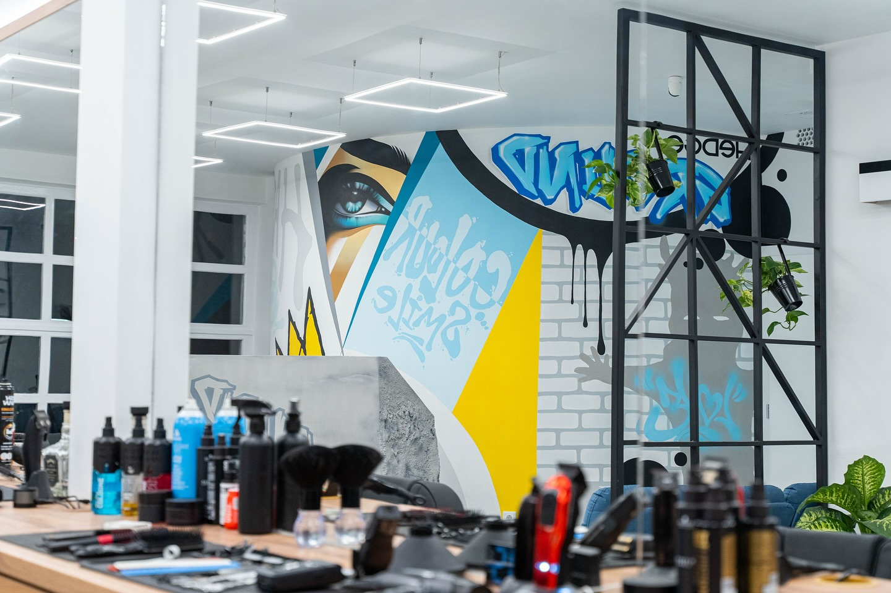

A Ground Debrecen egyetlen borbélyüzlete, ahol a mesterség és a vendégszeretet nem kompromisszum. Foglalj időpontot, és tapasztald meg személyesen.
IDŐPONTFOGLALÁSA Ground-ot nem üzleti tervvel nyitottam — megnyitottam, mert olyan helyet akartam létrehozni, amilyet én is szívesen látogatok. Debrecenben sokáig hiányoltam azt a típusú borbélyüzletet, ahol az ember nem csak nyiratkozni megy, hanem egy kicsit feltöltődik. Ahol valaki örül, hogy bejöttél.
A Ground egy közösség. Öt borbély, akik mind saját kézjeggyel rendelkeznek, de ugyanazt a vendégszeretetet képviselik. Visszajáró vendégek, akik néha csak azért jönnek, mert jó itt lenni. Ez az, amire büszke vagyok.

Minden, amire szükséged van — és semmi felesleges.
Azt, amit itt évek alatt összegyűjtöttünk, nehéz máshol megtalálni. A Skoolon megmutatjuk — a technikákat, az elveket mögöttük, és az őszinte gondolatokat arról, milyen ez a mesterség valójában. Ha komolyan gondolod, hogy ezt csináld — ez a közösség neked szól.
"Elvittem a barátaimat is, akik korábban soha nem jártak borbélyhoz, csak fodrászhoz. Most mindenki ide jár. Az a pillanat, mikor az ember leül és rögtön kap egy kávét — ezt nem lehet elfelejteni."
"Huszonöt éve jártam az előző borbélyomhoz. Elköltözött. Azt hittem, soha nem találok olyat, akire rá merem bízni a fejemet. Harmadik alkalomnál már tudják, hogy melyik oldalt hagyom hosszabbra. Ilyen az, amikor valaki valóban figyel."
"Az egész hangulat egészen más, mint amit megszoktam. Graffiti a falon, MacBook a pulton, és közben valaki azt kérdezi, presszót kérek-e vagy tejeset. Furcsa jó érzés egy helyen, amire nem számítasz."
"Életemben nem jártam még olyan helyen, ahol az első másodpercben otthon éreztem magam. Ez nem közhely — tényleg így volt. Nem tudom pontosan, mitől, de valahogy működik."
"A fiammal jövünk együtt. Ő 9 éves, és már ő dönti el, mikor kell menni. Ha rajta múlna, minden héten eljönnénk. Eddig soha nem volt ilyen ellenállás nélküli nyírás."
"Negyven felett az ember már nem nagyon vált borbélyt. Én váltottam. Nem bántam meg."